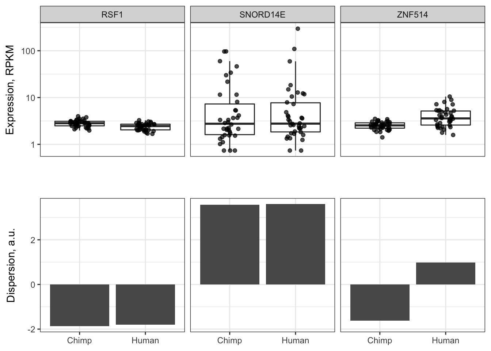
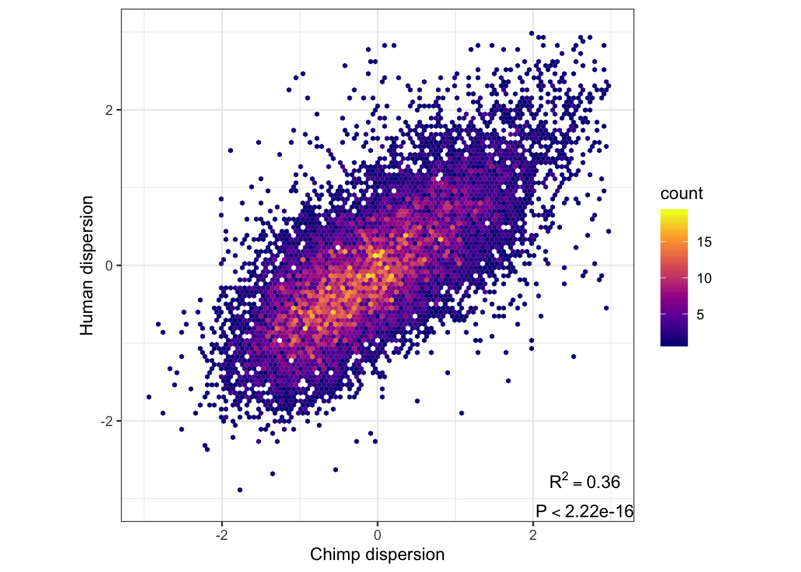
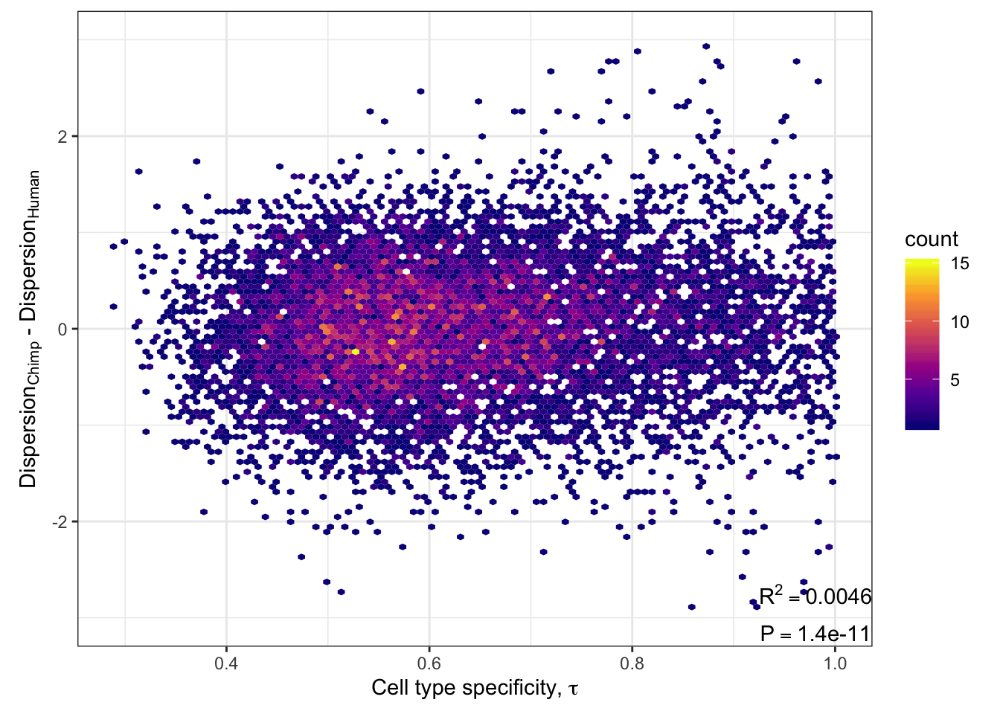

Final_plots_2_CumDist
Benjamin Fair
November 14, 2019
Last updated: 2019-11-14
Checks: 6 1
Knit directory: Comparative_eQTL/analysis/
This reproducible R Markdown analysis was created with workflowr (version 1.4.0). The Checks tab describes the reproducibility checks that were applied when the results were created. The Past versions tab lists the development history.
The R Markdown is untracked by Git. To know which version of the R Markdown file created these results, you’ll want to first commit it to the Git repo. If you’re still working on the analysis, you can ignore this warning. When you’re finished, you can run wflow_publish to commit the R Markdown file and build the HTML.
Great job! The global environment was empty. Objects defined in the global environment can affect the analysis in your R Markdown file in unknown ways. For reproduciblity it’s best to always run the code in an empty environment.
The command set.seed(20190319) was run prior to running the code in the R Markdown file. Setting a seed ensures that any results that rely on randomness, e.g. subsampling or permutations, are reproducible.
Great job! Recording the operating system, R version, and package versions is critical for reproducibility.
Nice! There were no cached chunks for this analysis, so you can be confident that you successfully produced the results during this run.
Great job! Using relative paths to the files within your workflowr project makes it easier to run your code on other machines.
Great! You are using Git for version control. Tracking code development and connecting the code version to the results is critical for reproducibility. The version displayed above was the version of the Git repository at the time these results were generated.
Note that you need to be careful to ensure that all relevant files for the analysis have been committed to Git prior to generating the results (you can use wflow_publish or wflow_git_commit). workflowr only checks the R Markdown file, but you know if there are other scripts or data files that it depends on. Below is the status of the Git repository when the results were generated:
Ignored files:
Ignored: .DS_Store
Ignored: .Rhistory
Ignored: .Rproj.user/
Ignored: analysis/.DS_Store
Ignored: analysis/figure/
Ignored: analysis_temp/.DS_Store
Ignored: big_data/
Ignored: code/.DS_Store
Ignored: code/snakemake_workflow/.DS_Store
Ignored: data/.DS_Store
Ignored: data/PastAnalysesDataToKeep/.DS_Store
Ignored: docs/.DS_Store
Ignored: docs/assets/.DS_Store
Ignored: figures/
Untracked files:
Untracked: Untitled/
Untracked: analysis/Final_2_DispersionPlots.Rmd
Untracked: analysis/Final_3_GSEA.Rmd
Untracked: analysis/Final_CumDistPlots.Rmd
Untracked: docs/figure/Final_2_DispersionPlots.Rmd/
Untracked: docs/figure/Final_CumDistPlots.Rmd/
Unstaged changes:
Modified: .gitignore
Deleted: GSEA_eQTL.pdf
Modified: analysis/20191025_FullGtexOverdispEstimates.Rmd
Modified: analysis/20191029_DE_v_dispersion.Rmd
Modified: analysis/20191107_SpecificityVDispersion.Rmd
Modified: analysis_temp/TabulaMuris_analysis2.Rmd
Modified: code/CustomFunctions.R
Note that any generated files, e.g. HTML, png, CSS, etc., are not included in this status report because it is ok for generated content to have uncommitted changes.
There are no past versions. Publish this analysis with wflow_publish() to start tracking its development.
Introduction
This markdown will be used to generate publication quality figures that I have already made at some point in my exploratory Rmarkdown analyses. This will mostly be plots that have to do with dispersion
Plots
First, load necessary libraries
library(tidyverse)
library(stringr)
library(biomaRt)
library(readxl)
library(latex2exp)
library(cowplot)
library(Seurat)
library(sctransform)
library(psych)
library(corrplot)
source("../code/CustomFunctions.R")Read in data…
#read in table of overdispersion, dispersion, mean expresion estimates
ChimpOverdispersionTable <- read.table("../output/OverdispersionEstimatesFromChimp_NoVirusChallangedIndividuals.txt", header=T, sep='\t', stringsAsFactors = F)
#Add gene symbols for prettier labels instead of ENSEMBL ID
human = useMart("ensembl", dataset = "hsapiens_gene_ensembl")
Symbols <- getBM(attributes=c("hgnc_symbol", "ensembl_gene_id"), filters="ensembl_gene_id", values=ChimpOverdispersionTable$gene, mart=human)
ChimpOverdispersionTable <- ChimpOverdispersionTable %>%
left_join(Symbols, by=c("gene"="ensembl_gene_id"))
# Read in eGene data
EgenesTested <- TsvToCombinedEgenes(Chimp.tsv = "../output/ChimpEgenes.eigenMT.txt.gz", Human.tsv = "../data/GTEX_v8_eGenes/Heart_Left_Ventricle.v8.egenes.txt.gz", SysToID.tsv = "../data/Biomart_export.Hsap.Ptro.orthologs.txt.gz", HumanTsvType = "GTEx")
# Read in count data
HumanSamplesToDrop <- c(c("SRR1507229","SRR603918", "SRR1478149", "SRR598509", "SRR613186"), c("SRR1489693", "SRR598148", "59167", "SRR1478900", "SRR1474730", "61317"))
ChimpSamplesToDrop <- c("Little_R")
OtherMetadata <- as.data.frame(read_excel("../data/Metadata.xlsx"))
VirusChallengedChimps <- OtherMetadata %>% filter(grepl("V+",Viral.status)) %>% pull(Individual.ID)
CountTableChimpFile <- '../output/PowerAnalysisFullCountTable.Chimp.subread.txt.gz'
CountTableHumanFile <- '../output/PowerAnalysisFullCountTable.Human.subread.txt.gz'
CountTables <- GetCountTables(CountTableChimpFile,
CountTableHumanFile,
0, ChimpOverdispersionTable$gene, ChimpSampleDrop=ChimpSamplesToDrop, HumanSampleDrop = HumanSamplesToDrop)Illustrative dispersion example with boxplots
An example of the raw data (log2RPKM) of a few genes with various dispersion estimates.
# Get a high dispersion and a low dispersion gene at similar RPKM as an example. Also get a gene with a big difference in dispersion between the two species.
HighDispersionGene <- ChimpOverdispersionTable %>%
filter(Chimp.Mean.Log2RPKM >= 2 & Chimp.Mean.Log2RPKM <= 3) %>%
mutate(DifferenceInDispersion = abs(Human.Residual-Chimp.Residual)) %>%
filter(DifferenceInDispersion < 0.1) %>%
top_n(1, Human.Residual) %>% pull(gene)
LowDispersionGene <- ChimpOverdispersionTable %>%
filter(Chimp.Mean.Log2RPKM >= 2 & Chimp.Mean.Log2RPKM <= 3) %>%
mutate(DifferenceInDispersion = abs(Human.Residual-Chimp.Residual)) %>%
filter(DifferenceInDispersion < 0.1) %>%
top_n(-1, Human.Residual) %>% pull(gene)
BigDifferenceInDispersion <- ChimpOverdispersionTable %>%
filter(Chimp.Mean.Log2RPKM >= 2 & Chimp.Mean.Log2RPKM <= 3) %>%
mutate(DifferenceInDispersion = abs(Human.Residual-Chimp.Residual)) %>%
filter(DifferenceInDispersion > 1.7 & DifferenceInDispersion < 2.2) %>%
top_n(1, DifferenceInDispersion) %>% pull(gene)
GenesToPlot <- c(HighDispersionGene, LowDispersionGene, BigDifferenceInDispersion)
Colplots <- ChimpOverdispersionTable %>%
dplyr::select(Chimp.Residual, Human.Residual, hgnc_symbol, gene) %>%
filter(gene %in% GenesToPlot) %>%
gather(key="sample", value="dispersion", -hgnc_symbol, -gene) %>%
mutate(Species = case_when(sample=="Chimp.Residual" ~ "Chimp",
sample=="Human.Residual" ~ "Human")) %>%
ggplot(aes(x=Species, y=dispersion)) +
geom_col() +
ylab("Dispersion, a.u.") +
facet_grid(.~hgnc_symbol) +
theme_bw() +
theme(axis.title.x=element_blank(),
strip.background = element_blank(),
strip.text.x = element_blank())
Boxplots <- cbind(CountTables$Chimp$log2RPKM[GenesToPlot,],
CountTables$Human$log2RPKM[GenesToPlot,]) %>%
as.data.frame() %>%
rownames_to_column("gene") %>%
left_join(Symbols, by=c("gene"="ensembl_gene_id")) %>%
gather(key="Individual", value="log2RPKM", -hgnc_symbol, -gene) %>%
mutate(Species = case_when(str_detect(Individual, "C.") ~ "Chimp",
str_detect(Individual, "H.") ~ "Human")) %>%
ggplot(aes(x=Species, y=log2RPKM)) +
geom_boxplot(outlier.shape=NA) +
geom_jitter(width=.15, height=0, alpha=0.7) +
facet_grid(.~hgnc_symbol) +
ylab(TeX("Expression, log_{2}RPKM")) +
theme_bw() +
theme(axis.title.x=element_blank(),
axis.text.x=element_blank(),
axis.ticks.x=element_blank())
plot_grid(Boxplots, Colplots, align="hv", ncol=1, nrow=2)
ggsave("../figures/OriginalArt/Dispersion.chimp_human_example_genes.pdf", units="mm", height=100, width=100)Illustrative regressing out mean effect
This illustrates how dispersion is calculated, after obtaining a gene-wise overdispersion parameter estimate by fitting negative binomial model to the count data
Before <- ChimpOverdispersionTable %>%
ggplot(aes(y=log(Human.Overdispersion), x=Human.Mean.Expression)) +
stat_binhex(bins=100) +
ylim(c(-5,3)) +
xlab(TeX("Expression, $\\hat{\\mu}$")) +
ylab(TeX("Overdispersion, log($\\hat{\\phi})$")) +
scale_fill_viridis_c(option="C", limits=c(0,25)) +
geom_smooth(method="loess", method.args=list(degree=1)) +
theme_bw() +
theme(aspect.ratio = 1)
After <- ChimpOverdispersionTable %>%
ggplot(aes(y=Human.Residual, x=Human.Mean.Expression)) +
stat_binhex(bins=100) +
ylim(c(-3,3)) +
xlab("Expression") +
ylab("Dispersion") +
lims(fill=c(0,25)) +
scale_fill_viridis_c(option="C", limits=c(0,25), guide=F) +
geom_hline(yintercept=0, color = "blue") +
theme_bw() +
theme(aspect.ratio = 1)
prow <- plot_grid(
plot_grid(
Before +
theme(legend.position = "none",
plot.margin = margin(6, 6, 6, 0)),
After +
theme(legend.position = "none",
plot.margin = margin(6, 6, 6, 0)),
align = 'hv',
nrow = 1,
axis='bt',
# axis='tblr',
labels=c("A", "B"),
vjust=1.5),
get_legend(Before +
theme(legend.box.margin = margin(0, 12, 0, 12))),
rel_widths = c(2,0.2),
align='hv',
greedy=F,
ncol=2,
scale=c(1,0.5))
prowggsave("../figures/OriginalArt/Dispersion.regression.pdf", units="mm", height=50, width=120)dispersion chimp v human
correlation of dispersion in chimp vs human
Correlation <-cor.test(ChimpOverdispersionTable$Chimp.Residual,
ChimpOverdispersionTable$Human.Residual,
use="complete.obs")
lb1 = paste0('atop(R^2==', round(Correlation$estimate**2,2), ', P', format.pval(Correlation$p.value), ')')
ChimpOverdispersionTable %>%
ggplot(aes(x=Chimp.Residual, y=Human.Residual)) +
# geom_point(alpha=0.05) +
# stat_bin2d(bins=100) +
stat_binhex(bins=100) +
xlim(c(-3,3)) +
ylim(c(-3,3)) +
xlab("Chimp dispersion") +
ylab("Human dispersion") +
scale_fill_viridis_c(option="C") +
coord_fixed() +
annotate("text",x=Inf,y=-Inf, label=lb1, hjust=1, vjust=-0.1, parse=TRUE) +
theme_bw()
ggsave("../figures/OriginalArt/Dispersion.chimp_human_scatter.pdf", units="mm", height=70, width=70)highly dispersed genes in tabula muris
tabula muris mouse heart FACS dataset is perhaps the most extensive single cell mammalian heart dataset available. Use this to see if highly dispersed genes correspond to cell type specific genes.
Heart.seur = readRDS("../big_data/TabMuris_heart_seurat.rds")
ChimpOverdispersionTable$MeanDispersion <- (ChimpOverdispersionTable$Chimp.Residual + ChimpOverdispersionTable$Human.Residual)/2
human = useMart("ensembl", dataset = "hsapiens_gene_ensembl")
mouse = useMart("ensembl", dataset = "mmusculus_gene_ensembl")
MouseGenes = rownames(Heart.seur)
genes = getLDS(attributes = c("mgi_symbol"), filters = "mgi_symbol", values = MouseGenes ,mart = mouse, attributesL = c("ensembl_gene_id", "chromosome_name", "start_position", "mmusculus_homolog_orthology_type"), martL = human, uniqueRows=T)
# Get list of one to one orthologs
one2one_HumanMouseOrthologs <- genes %>%
filter(Mouse.homology.type=="ortholog_one2one") %>%
dplyr::select(MGI.symbol, Gene.stable.ID)
CellTypeSpecificity <- read.table("../output/TissueSpecificity/CellTypeSpecificity.TabulaMurisHeart.tau.log.txt", col.names=c("Gene.stable.ID", "tau"), sep='\t')
CombinedTable <- one2one_HumanMouseOrthologs %>%
inner_join(CellTypeSpecificity, by="Gene.stable.ID") %>%
inner_join(ChimpOverdispersionTable, by=c("Gene.stable.ID"="gene")) %>%
drop_na()
#I want to grab the top overdispersed genes, but only those that are reliably expressed in at least 5 cells, and have an ensembl homolog match to human
CellNonZeroCounts <- data.frame(
NumCellsExpressing=rowSums(as.data.frame(Heart.seur@assays$RNA[,] > 0))) %>%
tibble::rownames_to_column("MGI.symbol")
HighlyDispersed.p <- ChimpOverdispersionTable %>%
left_join(one2one_HumanMouseOrthologs, by=c("gene"="Gene.stable.ID")) %>%
filter(!is.na(MGI.symbol)) %>%
left_join(CellNonZeroCounts, by="MGI.symbol") %>%
filter(NumCellsExpressing>50) %>%
filter(gene %in% CombinedTable$Gene.stable.ID) %>%
top_n(50, MeanDispersion) %>%
pull(MGI.symbol) %>%
DoHeatmap(Heart.seur, features = ., group.by="Cell.ontology.class", disp.min=0, size=3, label=F) +
scale_fill_gradientn(colours = hcl.colors(10, "YlOrRd"))
LowlyDispersed.p <- ChimpOverdispersionTable %>%
left_join(one2one_HumanMouseOrthologs, by=c("gene"="Gene.stable.ID")) %>%
filter(!is.na(MGI.symbol)) %>%
left_join(CellNonZeroCounts, by="MGI.symbol") %>%
filter(NumCellsExpressing>50) %>%
filter(gene %in% CombinedTable$Gene.stable.ID) %>%
top_n(-50, MeanDispersion) %>%
pull(MGI.symbol) %>%
DoHeatmap(Heart.seur, features = ., group.by="Cell.ontology.class", disp.min=0, size=3, label=F) +
scale_fill_gradientn(colours = hcl.colors(10, "YlOrRd"))
HighlyDispersed.data <- ggplot_build(HighlyDispersed.p)
# HighlyDispersed.data$layout$panel_params[[1]]$y.labels
LowlyDispersed.data <- ggplot_build(LowlyDispersed.p)
# LowlyDispersed.data$layout$panel_params[[1]]$y.labels
HighlyDisp.tau.p <- data.frame(genes=HighlyDispersed.data$layout$panel_params[[1]]$y.labels) %>% left_join(CombinedTable, by=c("genes"="MGI.symbol")) %>%
ggplot(aes(y=1:length(genes), x=1, fill=tau)) +
geom_tile() +
scale_x_discrete(expand=c(0,0))+
scale_y_discrete(expand=c(0,0)) +
scale_fill_viridis_c(option="C", limits=c(0,1)) +
theme_bw() +
theme(axis.title.x=element_blank(),
axis.text.x=element_blank(),
axis.ticks.x=element_blank()) +
theme(axis.title.y=element_blank(),
axis.text.y=element_blank(),
axis.ticks.y=element_blank())
prow <- plot_grid(
HighlyDispersed.p + theme(legend.position="none"),
HighlyDisp.tau.p + theme(legend.position="none", plot.margin = margin(t=6)),
align = 'b',
hjust = -1,
nrow = 1,
axis = "b",
rel_widths = c(1, 0.05),
scale = c(1,0.89)
)
ggsave("../figures/OriginalArt/Dispersion.tabmuris.high.png", plot=prow)lowly dispersed genes in tab muris
…same for lowly dispersed genes. As seen below, they tend to be not cell type specific.
LowlyDisp.tau.p <- data.frame(genes=LowlyDispersed.data$layout$panel_params[[1]]$y.labels) %>% left_join(CombinedTable, by=c("genes"="MGI.symbol")) %>%
ggplot(aes(y=1:length(genes), x=1, fill=tau)) +
geom_tile() +
scale_x_discrete(expand=c(0,0))+
scale_y_discrete(expand=c(0,0)) +
scale_fill_viridis_c(option="C", limits=c(0,1)) +
theme_bw() +
theme(axis.title.x=element_blank(),
axis.text.x=element_blank(),
axis.ticks.x=element_blank()) +
theme(axis.title.y=element_blank(),
axis.text.y=element_blank(),
axis.ticks.y=element_blank())
prow <- plot_grid(
LowlyDispersed.p + theme(legend.position="none"),
LowlyDisp.tau.p + theme(legend.position="none", plot.margin = margin(t=3.3)),
align = 'b',
hjust = -1,
nrow = 1,
axis = "b",
rel_widths = c(1, 0.05),
scale = c(1,0.842)
)
ggsave("../figures/OriginalArt/Dispersion.tabmuris.low.png", plot=prow)
legend.p1 <- get_legend(
LowlyDispersed.p +
theme(legend.position="right"))
legend.p2 <- get_legend(
LowlyDisp.tau.p + theme(legend.position="right"))
legends <- plot_grid(legend.p1, legend.p2, nrow=2, scale=c(0.8,0.5), rel_heights = c(1,0.2), align='b')
ggsave("../figures/OriginalArt/Dispersion.tabmuris.legend.pdf", plot=legends)Dispersion vs tabmuris cell specificity
More generally, tau correlates with dispersion
Correlation <-cor.test(CombinedTable$MeanDispersion, CombinedTable$tau,
use="complete.obs", method="spearman")
lb1 = paste0('atop(rho==', round(Correlation$estimate**2,2), ', P', format.pval(Correlation$p.value, 2), ')')
CombinedTable %>%
ggplot(aes(x=tau, y=MeanDispersion)) +
stat_binhex(bins=100) +
ylim(c(-3,3)) +
xlab(TeX("Cell type specificity, $\\tau$")) +
ylab(TeX("Dispersion, a.u.")) +
scale_fill_viridis_c(option="C") +
annotate("text",x=Inf,y=-Inf, label=lb1, hjust=1, vjust=-0.1, parse=TRUE) +
theme_bw() +
theme(aspect.ratio = 0.8)ggsave("../figures/OriginalArt/Dispersion.Correlation.tau.pdf", units="mm", height=70)CIBERSORT results
results of cell type deconvolution using CIBERSORT
CIBERSORT <- read.table("../data/CIBERSORT.Output_Job2.csv", sep=',', header=T) %>%
arrange(cardiac.muscle.cell) %>%
gather(key="cell.type", value="percent", -Input.Sample, -P.value, -Pearson.Correlation, -RMSE) %>%
mutate(Species = case_when(str_detect(Input.Sample, "C.") ~ "Chimp",
str_detect(Input.Sample, "H.") ~ "Human")) %>% head()
ggplot(CIBERSORT, aes(x=reorder(Input.Sample, percent, FUN=max), y=percent, fill=cell.type)) +
geom_bar(stat="identity") +
scale_y_continuous(limits = c(-0.001,1.001), expand = c(0, 0)) +
facet_grid(~Species, scales="free_x", space="free_x") +
theme_bw() +
theme(axis.title.x=element_blank(),
axis.text.x=element_blank(),
axis.ticks.x=element_blank())
ggsave("../figures/OriginalArt/Dispersion.CIBERSORT.pdf", units="mm", height=70)CIBERSORT vs expression PCs
Do cell type estimates correlate with expression PCs
cibersort.results <- read.table("../data/CIBERSORT.Output_Job2.csv", sep=',', header=T) %>%
filter(grepl("^C.",Input.Sample)) %>%
mutate(IID=gsub("^C.", "", Input.Sample, perl=T)) %>%
dplyr::select(-c("Input.Sample", "P.value", "Pearson.Correlation", "RMSE"))
PCs <- read.table("../output/Covariates/0GenotypePCs_and_10RNASeqPCs.covariates", header=T, check.names = F) %>%
mutate(IID=gsub(".RS", "", IID, perl=T)) %>%
column_to_rownames("IID") %>% t() %>% as.data.frame() %>%
dplyr::select(-SX) %>% rownames_to_column("IID")
cibersort.results.combined.PCs <- cibersort.results %>%
left_join(PCs, by="IID") %>% column_to_rownames("IID")
MyCorMatrix <- corr.test(x=cibersort.results.combined.PCs[,1:9],
y=cibersort.results.combined.PCs[,-(1:9)],
method="pearson",
adjust="BH")
pdf(file = "../figures/OriginalArt/CIBERSORT.v.PCs.pdf")
corrplot(MyCorMatrix$r, method='color', pch.cex=1.8, tl.srt=45, tl.col = "black", insig='label_sig', is.corr=F, p.mat=MyCorMatrix$p, sig.level=c(0.01))
dev.off()quartz_off_screen
2 dispersion grouped by essentiality
Are non essential genes more dispersed than essential genes?
pLI.data <- as.data.frame(read_excel("../data/Lek_etal_nature19057-SI Table 13.xlsx", sheet=2))
ToPlot <- ChimpOverdispersionTable %>%
left_join(pLI.data, by=c("hgnc_symbol"="gene")) %>%
mutate(pLI.Score.essentiality=case_when(
pLI>=0.1 ~ "Essential",
pLI<=0.1 ~ "NonEssential")) %>%
filter(pLI.Score.essentiality %in% c("Essential", "NonEssential"))
Test <- wilcox.test(data=ToPlot, MeanDispersion ~ pLI.Score.essentiality)
lb1 = paste0('P==', format.pval(Test$p.value, 2))
ggplot(ToPlot, aes(color=pLI.Score.essentiality,x=MeanDispersion)) +
stat_ecdf(geom = "step") +
scale_x_continuous() +
xlim(c(-2,3)) +
ylab("Cumulative frequency") +
annotate("text",x=Inf,y=-Inf, label=lb1, hjust=1, vjust=-0.1, parse=TRUE) +
theme_bw()
ggsave("../figures/OriginalArt/Dispersion.by.Essentiality.pdf")Conclusions
sessionInfo()R version 3.6.1 (2019-07-05)
Platform: x86_64-apple-darwin15.6.0 (64-bit)
Running under: macOS Catalina 10.15.1
Matrix products: default
BLAS: /Library/Frameworks/R.framework/Versions/3.6/Resources/lib/libRblas.0.dylib
LAPACK: /Library/Frameworks/R.framework/Versions/3.6/Resources/lib/libRlapack.dylib
locale:
[1] en_US.UTF-8/en_US.UTF-8/en_US.UTF-8/C/en_US.UTF-8/en_US.UTF-8
attached base packages:
[1] stats graphics grDevices utils datasets methods base
other attached packages:
[1] gridExtra_2.3 edgeR_3.26.8 limma_3.40.6
[4] MASS_7.3-51.4 corrplot_0.84 psych_1.8.12
[7] sctransform_0.2.0 Seurat_3.1.1 cowplot_1.0.0
[10] latex2exp_0.4.0 readxl_1.3.1 biomaRt_2.40.5
[13] forcats_0.4.0 stringr_1.4.0 dplyr_0.8.3
[16] purrr_0.3.3 readr_1.3.1 tidyr_1.0.0
[19] tibble_2.1.3 ggplot2_3.2.1 tidyverse_1.2.1
loaded via a namespace (and not attached):
[1] backports_1.1.5 workflowr_1.4.0 plyr_1.8.4
[4] igraph_1.2.4.1 lazyeval_0.2.2 splines_3.6.1
[7] listenv_0.7.0 digest_0.6.22 htmltools_0.4.0
[10] gdata_2.18.0 magrittr_1.5 memoise_1.1.0
[13] cluster_2.1.0 ROCR_1.0-7 globals_0.12.4
[16] modelr_0.1.5 RcppParallel_4.4.4 R.utils_2.9.0
[19] prettyunits_1.0.2 colorspace_1.4-1 blob_1.2.0
[22] rvest_0.3.4 ggrepel_0.8.1 haven_2.1.1
[25] xfun_0.10 hexbin_1.27.3 crayon_1.3.4
[28] RCurl_1.95-4.12 jsonlite_1.6 zeallot_0.1.0
[31] survival_2.44-1.1 zoo_1.8-6 ape_5.3
[34] glue_1.3.1 gtable_0.3.0 leiden_0.3.1
[37] future.apply_1.3.0 BiocGenerics_0.30.0 scales_1.0.0
[40] DBI_1.0.0 bibtex_0.4.2 Rcpp_1.0.2
[43] metap_1.1 viridisLite_0.3.0 progress_1.2.2
[46] reticulate_1.13 foreign_0.8-72 bit_1.1-14
[49] rsvd_1.0.2 SDMTools_1.1-221.1 stats4_3.6.1
[52] tsne_0.1-3 htmlwidgets_1.5.1 httr_1.4.1
[55] gplots_3.0.1.1 RColorBrewer_1.1-2 ellipsis_0.3.0
[58] ica_1.0-2 pkgconfig_2.0.3 XML_3.98-1.20
[61] R.methodsS3_1.7.1 uwot_0.1.4 locfit_1.5-9.1
[64] labeling_0.3 tidyselect_0.2.5 rlang_0.4.1
[67] reshape2_1.4.3 AnnotationDbi_1.46.1 munsell_0.5.0
[70] cellranger_1.1.0 tools_3.6.1 cli_1.1.0
[73] generics_0.0.2 RSQLite_2.1.2 broom_0.5.2
[76] ggridges_0.5.1 evaluate_0.14 yaml_2.2.0
[79] npsurv_0.4-0 knitr_1.25 bit64_0.9-7
[82] fs_1.3.1 fitdistrplus_1.0-14 caTools_1.17.1.2
[85] RANN_2.6.1 pbapply_1.4-2 future_1.14.0
[88] nlme_3.1-141 R.oo_1.22.0 xml2_1.2.2
[91] compiler_3.6.1 rstudioapi_0.10 curl_4.2
[94] plotly_4.9.0 png_0.1-7 lsei_1.2-0
[97] stringi_1.4.3 lattice_0.20-38 Matrix_1.2-17
[100] vctrs_0.2.0 pillar_1.4.2 lifecycle_0.1.0
[103] Rdpack_0.11-0 lmtest_0.9-37 RcppAnnoy_0.0.13
[106] data.table_1.12.6 bitops_1.0-6 irlba_2.3.3
[109] gbRd_0.4-11 R6_2.4.0 KernSmooth_2.23-16
[112] IRanges_2.18.3 codetools_0.2-16 gtools_3.8.1
[115] assertthat_0.2.1 rprojroot_1.3-2 withr_2.1.2
[118] mnormt_1.5-5 S4Vectors_0.22.1 parallel_3.6.1
[121] hms_0.5.1 grid_3.6.1 rmarkdown_1.16
[124] Rtsne_0.15 git2r_0.26.1 Biobase_2.44.0
[127] lubridate_1.7.4